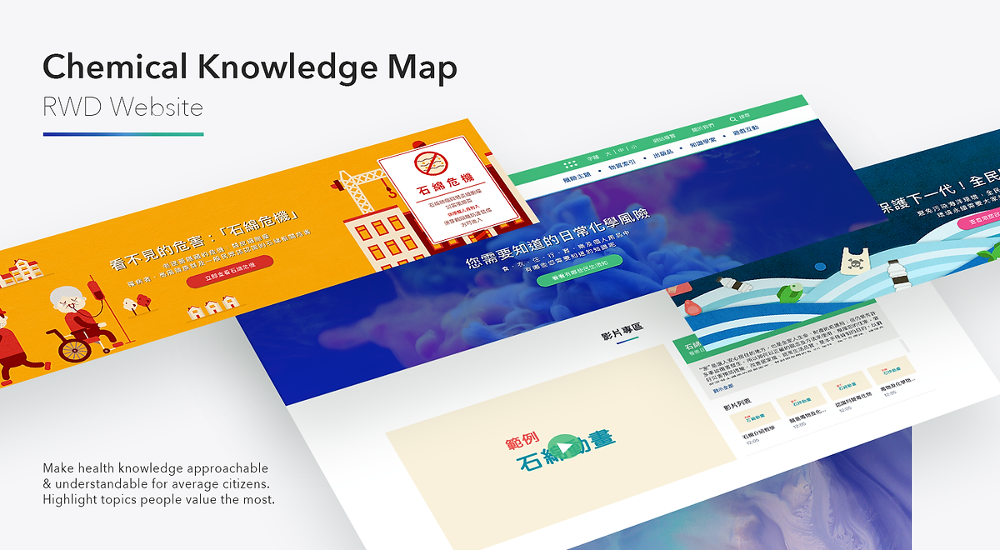

Complete site design — homepage · categories · knowledge map · chemical detail


Government public-education site turning hazardous chemical data into approachable visual storytelling — through illustrations, life-context categories, and a gamified knowledge map
Taiwan's Toxic & Chemical Substances Bureau had a public safety problem: how do you help ordinary citizens understand which chemicals in their daily lives are hazardous — and why? The existing resources were thick reference documents written for regulatory professionals. Nobody read them. Nobody was supposed to.
The subject matter is inherently technical and potentially alarming. The design challenge was to make it approachable — even enjoyable — without trivialising the safety message. Government sites have a reputation for being unusable. This was a chance to prove that public service design can be world-class.
The core design problem wasn't visual — it was structural. Chemical databases are organised the way chemists think: by compound name, molecular formula, CAS number. But the people this site needed to reach don't think in chemical terminology. They think in terms of their daily lives.
A parent worrying about their child's plastic water bottle doesn't search "Bisphenol A." They think about what their child is drinking from. This mental model gap was the central design challenge: the information had to be reorganised around how citizens actually encounter chemicals — not how scientists classify them.
Instead of asking "what chemical are you looking for?" — which requires prior knowledge — we asked "where in your life did you encounter it?" This single structural decision unlocked the entire information architecture.
The top-level navigation is built entirely around daily life contexts. Each category represents a recognisable domain — the kitchen, the closet, the commute. Within each, chemicals are surfaced through the objects and situations that people already encounter. The user never needs to know a chemical name to start exploring.
A user worried about a cleaning product doesn't need to know it's called "sodium hypochlorite" — they navigate to Accommodation → Cleaning → and encounter it in its real-world form first, before any chemical name appears. Understanding comes before jargon.
Different users approach the same content with different behaviours. A curious teenager browses visually. A concerned parent searches by object. A student doing research explores connections. The design supports all three simultaneously — without forcing any single mental model onto the experience.
Every category, sub-category, and chemical entry has a corresponding custom illustration character. Characters are friendly and slightly anthropomorphic — designed to signal that this content is approachable, not threatening. The illustration system was designed to scale: the same visual language covers 200+ chemical entries without feeling repetitive.
A warm, illustration-led visual system that makes hazardous chemical data feel like a children's encyclopaedia — without compromising accuracy or authority.
The colour system is dual-purpose: warm, vibrant tones signal approachability at the homepage level, while category colours create a navigational vocabulary across the full dictionary. Each of the five life categories owns a distinct colour — consistent across icons, headers, and detail pages.
Successfully launched as a public educational resource by Taiwan's Toxic & Chemical Substances Bureau. The life-context visual dictionary format — connecting everyday objects to chemical awareness through illustration and gamification — became a reference model for subsequent government digital communication projects in Taiwan.